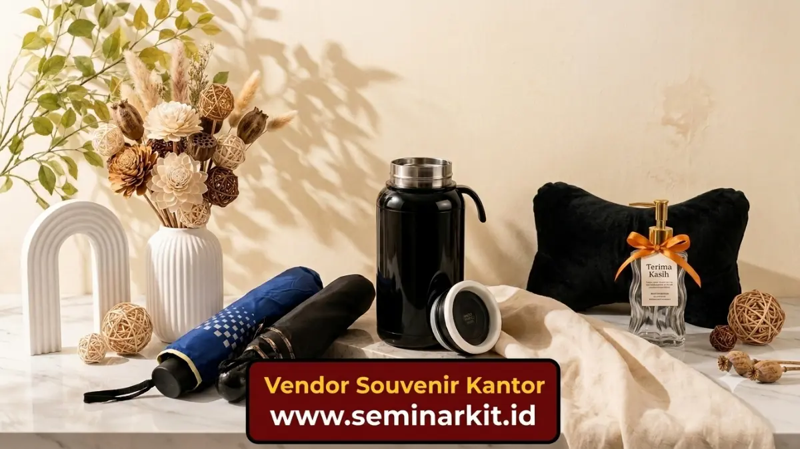

Berbagai jenis souvenir kantor yang terkenal meliputi alat tulis berkualitas, tumbler yang dapat disesuaikan, tas kanvas, hampers, serta merchandise yang sesuai dengan tema perusahaan dan karakter penerima.
- Souvenir kantor yang paling banyak digunakan adalah alat tulis dan tumbler.
- Pemilihan jenis barang sebaiknya disesuaikan dengan status penerima, klien atau karyawan.
- Barang fungsional harian cenderung memberi dampak branding lebih lama.
- Hampers cocok digunakan pada momen perayaan atau hari besar perusahaan.
Apa Saja Jenis Souvenir Kantor yang Paling Umum Digunakan?
Jenis souvenir kantor yang paling umum digunakan adalah alat tulis, tumbler, tas, dan buku catatan karena sifatnya yang fungsional dan mudah digunakan sehari-hari oleh penerima.
Alat tulis seperti pulpen dan buku catatan sering kali menjadi pilihan karena biaya produksinya yang cukup terjangkau, namun tetap memberikan kesan profesional saat dicetak dengan logo perusahaan yang rapi.
Tumbler dan botol minum custom juga populer karena digunakan berulang kali dalam aktivitas harian penerima, sehingga logo perusahaan lebih sering terlihat.
Selain itu, tas kanvas dan pouch multifungsi juga semakin diminati sebagai souvenir kantor karena praktis digunakan dan dianggap lebih ramah lingkungan dibandingkan kantong plastik sekali pakai.
Souvenir Kantor Apa yang Cocok untuk Klien Korporat?
Souvenir yang cocok untuk klien korporat umumnya bergaya elegan dan minimalis, seperti set alat tulis premium, tumbler stainless berkualitas tinggi, atau power bank dengan desain profesional.
Pemilihan souvenir untuk klien sebaiknya mempertimbangkan kesan formal dan eksklusif, mengingat penerima biasanya merupakan mitra bisnis atau pengambil keputusan di perusahaan lain.
Warna netral, logo yang tercetak rapi, dan kemasan presentasi yang baik dapat meningkatkan kesan profesional souvenir tersebut.
Beberapa perusahaan juga memilih memberikan hampers berisi kombinasi produk, seperti alat tulis dan makanan ringan kemasan, khususnya pada momen hari raya atau akhir tahun sebagai bentuk apresiasi kepada klien.

Souvenir Kantor Apa yang Cocok untuk Karyawan Internal?
Souvenir yang cocok untuk karyawan internal umumnya lebih santai dan personal, seperti kaos bertema perusahaan, mug custom, atau merchandise yang berkaitan dengan budaya kerja internal.
Untuk acara seperti gathering tahunan atau perayaan ulang tahun perusahaan, souvenir yang mendukung kekompakan tim. Misalnya jaket seragam atau tas ransel dengan desain seragam, sering dipilih karena dapat meningkatkan rasa kebersamaan antar karyawan.
Souvenir internal juga dapat disesuaikan dengan kebutuhan praktis karyawan sehari-hari di kantor, seperti organizer meja kerja, notebook, atau aksesori pendukung produktivitas lainnya.
Bagaimana Tren Souvenir Kantor Ramah Lingkungan Saat Ini?
Tren souvenir kantor ramah lingkungan saat ini mengarah pada penggunaan bahan yang dapat digunakan kembali, seperti tas kain, botol minum reusable, dan produk berbahan dasar daur ulang.
Kesadaran akan isu lingkungan secara umum berpengaruh pada pilihan perusahaan dalam menentukan souvenir kantor. Dimana barang sekali pakai berbahan plastik mulai dihindari dan digantikan dengan produk yang lebih tahan lama serta minim dampak lingkungan.
Pemilihan jenis souvenir kantor sebaiknya disesuaikan dengan profil penerima, baik klien maupun karyawan, serta mempertimbangkan tren fungsi dan keberlanjutan barang yang diberikan. Untuk memahami cara memilih souvenir sesuai anggaran, simak pembahasan mengenai cara memilih souvenir kantor sesuai budget.

Banner promosi: klik gambar untuk langsung terhubung ke WhatsApp tim sales.